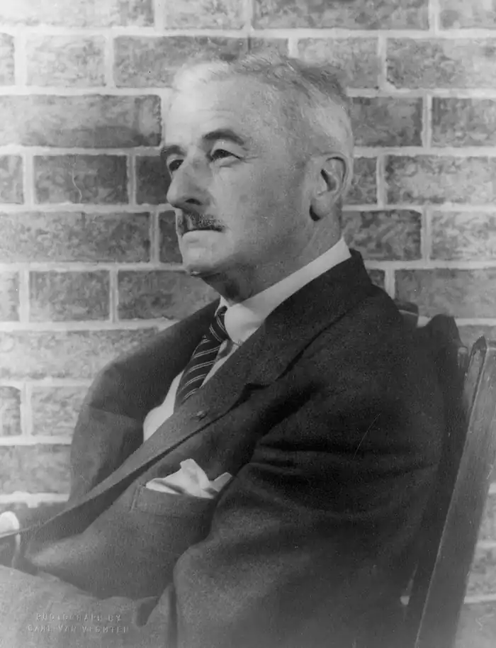
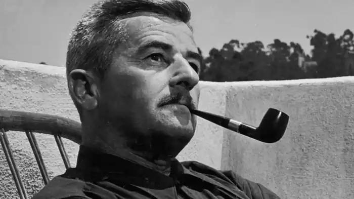
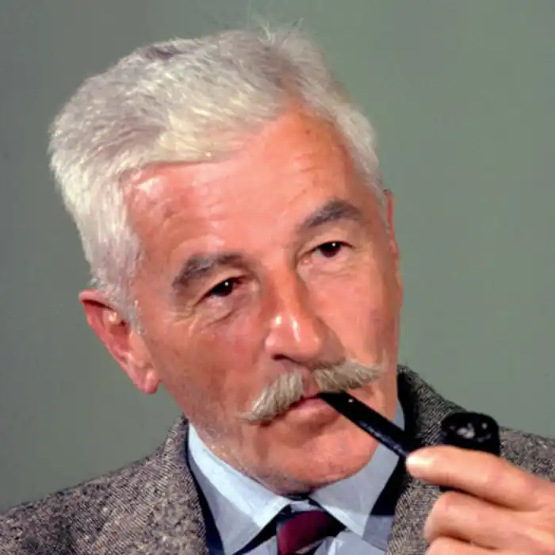
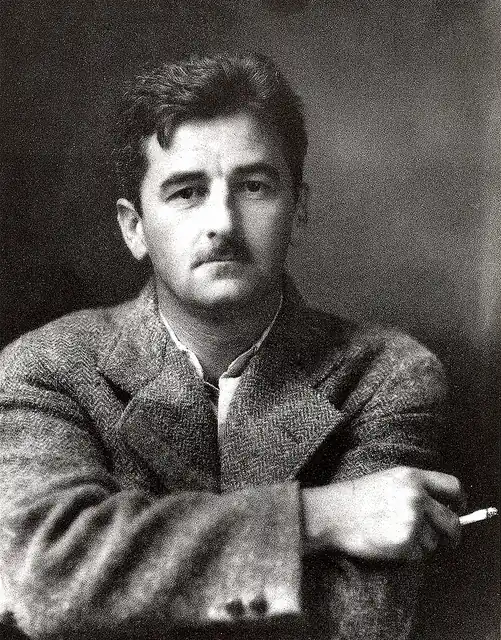

ФОЛКНЕР, Вільям Гаррісон (Faulkner, William — 1897, Нью-Олбані, шт. Міссісіпі — 06.07.1962, Оксфорд, шт. Міссісіпі) — американський письменник, лауреат Нобелівської премії
Народився на Півдні Америки у штаті Міссісіпі, з яким була пов'язана історія його сім'ї. Більшу частину свого життя провів саме тут, у містечку Оксфорд. Історія та легенди американського Півдня та перекази його власної родини стали матеріалом найвідоміших творів Фолкнера. Однією із родинних легенд було життя прадіда Фолкнера, на честь якого майбутнього письменника назвали Вільямом. Полковник Фолкнер побудував залізницю від міста Ріплі, під часи війни Півночі та Півдня створив і очолив кавалерійський полк, написав роман "Біла троянда Мемфіса", загальний тираж якого сягнув 160 тис. примірників; виконував адвокатські функції у Ріплі й, утверджуючись на Півдні, у різний час при самозахисті убив трьох людей. Суд щоразу виправдовував його. Проте, врешті-решт, полковника Фолкнера застрелив його політичний суперник. Майбутній письменник народився через вісім років після смерті прадіда, коли багато людей все ще пам'ятали його. У місті навіть була встановлена його статуя. Фолкнеру подобалася прадідова легендарність, і він писав про це так: "Його знала сила-силенна людей, але немає і двох осіб, які б однаково згадували про нього чи на один копил описували".
Батько письменника, Маррі Фолкнер, був інспектором в університеті Міссісіпі. Він не мав ані темпераменту, ані хватки легендарного полковника Фолкнера і був радше невдахою. У його сім'ї росли четверо синів, серед яких найстаршим був Вільям. Про хлопчиків піклувалася чорношкіра нянька Кароліна Барр, яка до 16 років перебувала у рабстві, і вона розказувала чимало історій про життя чорних невільників і про війну Півночі та Півдня. Хлопці лазили на дерева за пташиними гніздами, любили походи до лісу, який починався одразу ж за їхнім будинком, робили досліди з хімії та фотографії. Вільям любив читати і малювати. Він став чудовим рисувальником, успадкувавши художні здібності від матері. Коло його лектури визначала бібліотека прадіда, смак якого "зводився до найпростішої прямолінійної романтики, на кшталт Скотта і Дюма". Сильне враження на хлопчика справив перекладений роман Г. Сенкевича "Пан Володиєвський". У 16 років Фолкнер відкрив для себе А. Ч. Свінберна, а згодом П. Б. Шеллі, Дж. Кітса, С. Т. Колріджа. У Фолкнера змалечку проявився талант оповідача. Він умів говорити так захопливо, що міг змусити свого приятеля Френка Макелроя виконувати свою домашню роботу — приносити з повітки відро з вугіллям — за власні оповідки. З 9 років Фолкнер їздив на доросле полювання. Свої дитячі враження від мисливства передав у повісті "Ведмідь". У школі за два роки Фолкнер закінчив чотири класи. Любив грати у футбол та бейсбол, а от боротися не любив. У 12 років Фолкнер випускав рукописну газету. На запитання вчителя про плани на майбутнє завжди відповідав, що хоче стати письменником, як його прадід. Любив коней, пропадав у конюшнях, які утримував батько. На заощаджені гроші купив собі поні, який виявився необ'їждженим, і зумів приборкати його. Надавав великого значення самоосвіті і, зрештою, у десятому класі покинув школу. У 17 років Фолкнер познайомився з 21-річним випускником університету Ф. Стоуном, котрий став його другом на все життя. За порадою товариша Фолкнер перечитав О. де Бальзака, В. М. Теккерея, Г. Філдінґа, Д. Дефо, Ч. Діккенса, Дж. Конрада, Ш. Андерсона, Т. Драйзера, М. Гоголя, Ф. Достоєвського, А. Чехова, вірші П. Верлена, Ш. Бодлера, С. Малларме, Р. Фроста, Т. Еліота. Відтак на запитання про те, як навчитися писати, Фолкнер завжди радив читати якомога більше і думати над тим, як це зроблено. Не любив книг із філософії й естетики. Стоун згадував, що під час прогулянок околицями Оксфорда, окрім розмов про прочитане, вони вигадували персонажів, водночас смішних і страшних, які нагадували поширених у ті часи дрібних здирників та авантюристів. У дитинстві на Фолкнера справила велике враження демонстрація польоту на повітряній кулі. Він узявся конструювати планер, який, проте, розвалився під час випробування. У Європі тривала війна. Фолкнер зачитувався повідомленнями про подвиги пілотів, на рахунку яких було 38, 40, 72 збитих літаків. У 1918 р. було оголошено про набір у канадське авіаційне училище, і Фолкнер подався вчитися на авіатора. У 1919 р. Фолкнер вступив в університет Міссісіпі, обравши для вивчення французьку та іспанську мови й англійську літературу. Вірив лише у самоосвіту, сумлінним студентом не був. Змінив низку випадкових посад (був університетським поштмейстером, працював у книгарні). Із задоволенням виконував обов'язки наставника скаутів. Чимало часу присвячував походам з дітьми, вигадував для них ігри, що розвивали сміливість, спритність, кмітливість. Увечері біля багаття розповідав своїм юним слухачам різноманітні історії. На цьому трималася дисципліна: якщо її порушували, розповідей не було. У 1925 р. Фолкнер зумів опублікувати збірку віршів "Мармуровий фавн" ("The Marble Faun"), на якій позначився сильний вплив французьких символістів, але водночас поезія Фолкнера вирізнялася тонкою музичністю, відчуттям кольору і ритму. Мармуровий фавн серед прекрасного саду, де все живе — квітнуть троянди, виграють мерехтливими бризками фонтани, шумлять дерева, уособлював двоїсту природу створіння, яке усвідомлює свою вічність і минущий характер всього, що її оточує, але при цьому не здатне отримати чуттєву насолоду, пізнати принадливість навколишнього життя. Цей образ був метафорою життя митця: його прагнення бути разом з людьми, жити їхнім життям і бути схожим на них і, водночас, усвідомлення неможливості такого поєднання і навіть свідомого відсторонення і протиставлення себе їм. Того ж таки року Фолкнер вирушив у Новий Орлеан і познайомився там із Шервудом Андерсоном, який тоді працював журналістом і відіграв важливу роль у становленні молодого письменника. Щоб допомогти Фолкнеру, Андерсон вдався до гри: пишучи листи від імені вигаданих персонажів, він керував роботою літератора-початківця, всіляко підтримуючи його наміри взятися за роман. Перший роман Фолкнера "Солдатська винагорода" ("Soldiers Pay", 1926) розповідав про юнацький псевдоромантизм та уроки Першої світової війни. Проте у 1926 р. ця тема була вже не новою. У 1927 р. з'явився наступний роман — "Москіти" ("Mosquitoes"), у якому вперше дія відбувається у містечку Джефферсон — узагальненому образі маленьких містечок американського Півдня. Після "Москітів" з'явилася низка наступних романів, серед яких був і "Сарторіс" ("Sartoris", 1929) — перший із серії творів, що описують історію родин Комптонів і Сарторісів. Того самого року Фолкнер написав оповідання, у яких вперше з'явилися Гевін Стівенс — окружний прокурор, людина з підвищеним почуттям справедливості (йому судилося стати перехідним героєм, який об'єднує багато творів Фолкнера у певну цілісність, як це було колись з перехідними героями Бальзака), та Флем Сноупс, торговець швацькими машинками "Ретліф". Долі цих персонажів надзвичайно ретельно будуть простежені у подальших творах Фолкнера. Саме у цей час письменник остаточно знайшов свою тему. Ш. Андерсон радив Фолкнеру спробувати описати місце, де він народився, і відчути його силу та владу над собою. І, почавши писати про добре відоме, Фолкнер відчув невичерпність знайденої теми. Розмірковуючи про своєрідність американської літератури, Фолкнер стверджував, що вона не могла розвинутися з фольклору, тому що американський фольклор був надто строкатим, він складався з фольклору індіанців, чорного населення і переселенців. Вона також не могла виникнути і на ґрунті американського сленгу, адже він надто відрізнявся в різних куточках країни. Але вона могла виникнути лише на основі таких образів, які були б зрозумілими для кожного, хто читає англійською. І Фолкнер знайшов такі образи, створив їх. У процесі створення художнього твору він приділяв особливу увагу місцевому колориту, стверджуючи, що "Гамлет" та "Ромео і Джульетта" могли бути створені лише в Англії і лише в єлизаветинський період, так само, як "Мадам Боварі" могла бути створена лише в долині Рони, а не деінде. Фолкнер докоряв американським письменникам, які подалися у Європу, вважаючи Америку естетично неспроможною. Найважчим романом у своїй творчій біографії Фолкнер вважав роман 1929 р. "Шум і лють" ("Sound and Fury"), у чотирьох частинах якого свій погляд на події викладають різні люди, а найприкметнішою виявляється точка зору 33-річ-ного душевнохворого Бенджі Комптона. У цьому творі Фолкнер досконало відшліфував філігранну письменницьку техніку у відтворенні чи то похмурих, чи то ліричних настроїв. У романі задовго до Другої світової війни пролунають слова, які згодом будуть усвідомлені як один з її висновків: "Жодна битва не призводить до перемоги. Битв навіть не існує. Поле бою лише розкриває перед людиною прірву її омани і її відчаю, а перемога — це тільки ілюзія, вигадка філософів і тупаків". Назву роману Фолкнер запозичив із шекспірівського "Макбета", де один із персонажів називає життя людини повістю, розказаною божевільним, у якій немає жодного сенсу, а тільки шум і лють. І в наступних своїх творах Фолкнер викриватиме бездумність, безглуздість життя обивателів. У романі "Коли я конала" ("As I Lay Dying", 1930) Анс Бандрен, виконуючи останню волю дружини поховати її у Джефферсоні, витягне її домовину з води, врятує з палаючого будинку і повернеться додому з новою дружиною, але це нікого не здивує. Події цього твору постають перед очима читача з іще різноманітніших, ніж у попередньому романі, точок зору. "Коли я конала" складається з 59 коротких монологів. Фолкнер став популярним після виходу у світ його роману "Святилище" ("Sanctuary", 1931), написаного, щоби привернути увагу видавців. "Фолкнер отримав роботу в Голівуді, де працював сценаристом на студії "Метро Ґоддвін Майєр". У 1932 р. з'явився його роман "Світло у серпні" ("Light in August"), а в 1936 р. — "Авессалом, Авессалом..." ("Absolom, Absolom..."). Ці твори зміцнили його репутацію найкращого сучасного романіста. У 1939 р.